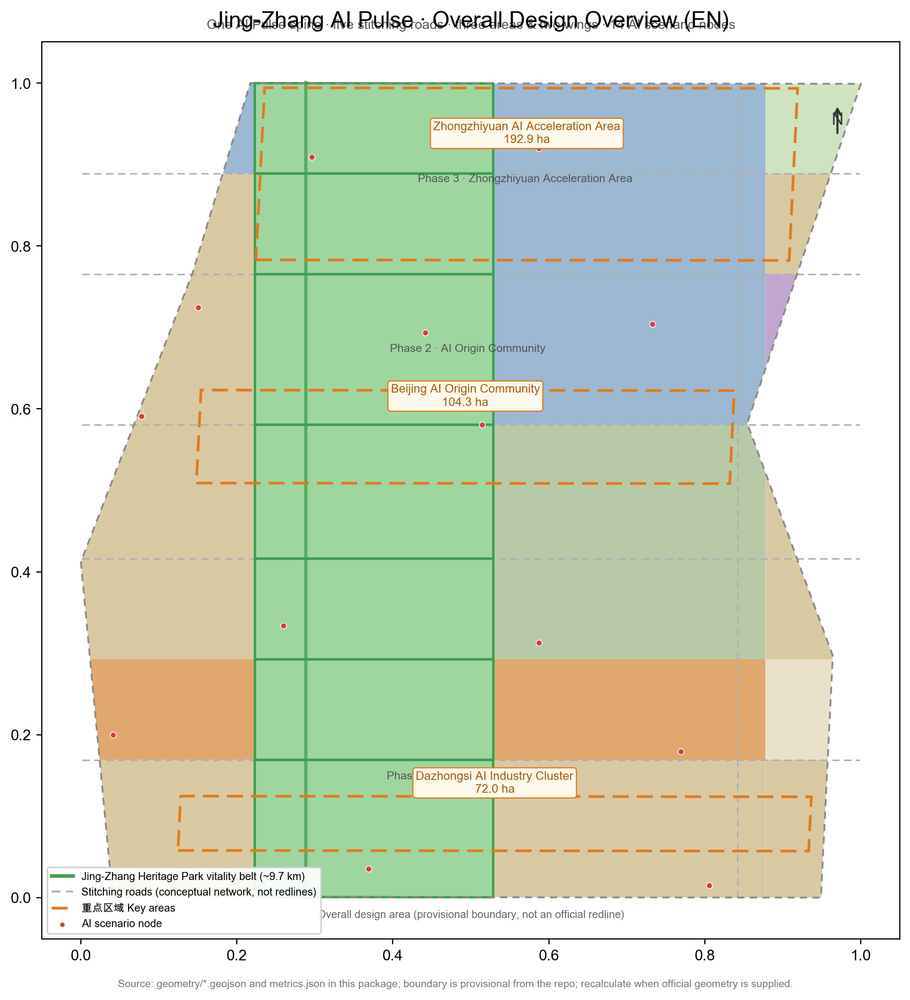
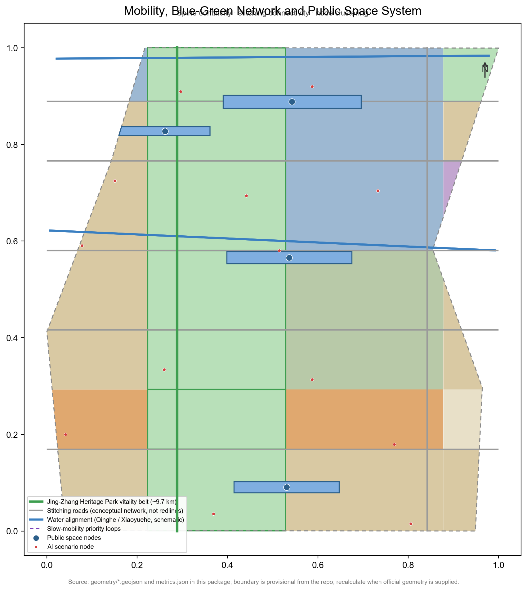

Jing-Zhang AI Pulse · Urban Design for the Centennial Jing-Zhang AI Innovation Belt
AI Agent open-call submission · Haidian, Beijing
AI Agent submissionBoundary is provisional (not an official redline)package_type: professional_design_packagev0.2 · 2026-08-11
11,412,825.4
Overall design area (㎡)
37.1%
Green ratio
2.8%
Public space ratio
1.8%
Building density (concept)
5.9%
Road ratio (concept)
14
AI scenario nodes
Overview Map

Overview: one AI Pulse spine (about 9.7 km) · five stitching roads · three areas and two wings · 14 AI scenario nodes; boundary is provisional and must be recalculated when the official redline is supplied.
Three-Level Scope
Coordinated research area about 43.6 km² → overall design area 11.41 km² → three key detailed-design areas about 368.4 ha, cascading from industry strategy to overall urban design to detailed design.
Research area: North 5th Ring — Jingzang Expressway — Xizhimen Outer St. — Wanquanhe Rd.
Overall design area: 1–2 km around the Jing-Zhang Heritage Park
Key areas: Zhongzhiyuan / AI Origin Community / Dazhongsi (provisional)
Key Areas
Key area (provisional)
Area (㎡)
Zhongzhiyuan AI Acceleration Area
1,929,201.9
Beijing AI Origin Community
1,043,236.9
Dazhongsi AI Industry Cluster
720,454.2
The three key-area polygons are provisional and must not be used as official redlines or precise-area basis.
Land-Use Zones
Land use
Code
Area (㎡)
Share
Park green
1401
4,080,772.47
35.8%
Residential
0701
2,785,598.95
24.4%
Research
0802
1,978,657.16
17.3%
Education
0804
1,334,896.54
11.7%
Commercial
05
914,054.14
8.0%
Plaza
1403
136,366.48
1.2%
Protective green
1402
151,294.31
1.3%
Cultural
0803
31,185.34
0.3%
Mobility & Slow Movement

Jing-Zhang AI Pulse slow-mobility spine about 9.7 km; conceptual road network 68 10k㎡ — not road redlines.
Blue-Green Network & Public Space
Metric
Value
Green & open space
4,232,066.78 ㎡ · green ratio 37.1%
Public space (4 nodes)
319,986.64 ㎡ · ratio 2.8%
Buildings
Metric
Value
Conceptual footprint
204,758.13 ㎡
Conceptual total floor area
1,635,693.04 ㎡
Conceptual FAR
0.143
Conceptual design quantities (low confidence), not statutory controls; legal FAR awaits official regulatory data.
Renewal Projects
Phase
Area (㎡)
Share
Phase 1 · Dazhongsi & south
5,173,651.7
45.3%
Phase 2 · AI Origin & Xiaoyuehe
3,803,581.7
33.3%
Phase 3 · Zhongzhiyuan
2,435,592.0
21.3%
Phase 1: Dazhongsi AI cluster & south stitching; Phase 2: AI Origin & Xiaoyuehe wing; Phase 3: Zhongzhiyuan acceleration area.
AI Scenarios
Open-square agent release node
LLM evaluation field
Edge-compute neighborhood hub
AI Origin founder memorial
Model-debut terraced theatre
AI talent apartment lodge
Autonomous shuttle loop stop
Digital-twin city scenario pavilion
Smart-mobility test intersection
AI+ life-service experience street
Dazhongsi AI consumption capsule
Drone delivery test point
AI telemedicine consultation point
Youth AI startup community lounge
14 scenario nodes correspond to 12 scenario cards (incl. 3 industry test & validation scenarios) and 6 persona types.
Key Metrics
Metric
Value
Status
Site area
11,412,825.4 ㎡
known
Green ratio
37.1%
known
Public space ratio
2.8%
known
Building density
1.79%
known
Road ratio
5.9%
known
Scenario nodes
14
known
Legal FAR
Awaiting official regulatory data
unknown
Task Coverage
agent.1 Concept & naming "Jing-Zhang AI Pulse" / logo direction / spatial structure — covered
agent.2 Full-stack innovation system + 8 global ecosystem cases — covered
agent.3 12 scenario cards (incl. 3 test & validation) + 6 personas — covered
agent.4 3 AI pilgrimage landmarks + public space components — covered
⚠ Provisional boundary & compliance: all spatial proposals here are conceptual suggestions / reference schemes for professional teams to deepen; they do not replace formal planning, approved government action, or implementation commitments. Boundary and regulatory data are provisional or pending; areas and metrics must be recalculated when official data is supplied. See proposal.md and compliance_matrix.json.